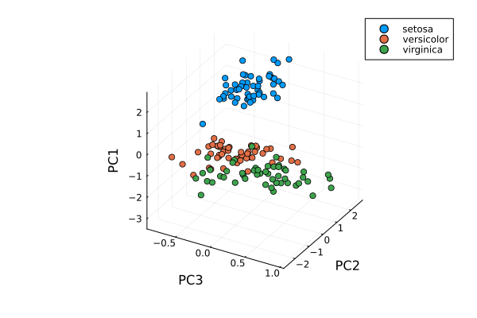
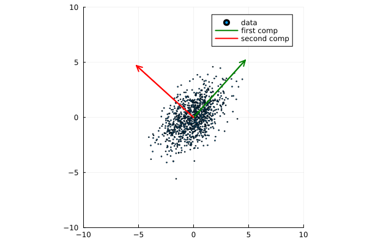
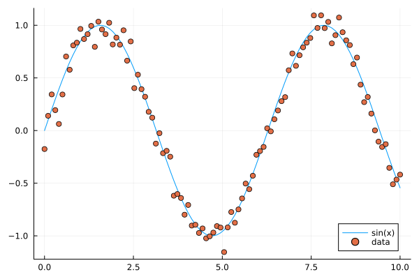

Linear algebra¶
Questions
How can I create vectors and matrices in Julia?
How can I perform vector and matrix operations in Julia?
How to generate random matrices and perform sparse matrix computations?
How does Principle Component Analysis work?
Instructor note
35 min teaching
25 min exercises
Callout
The code in this lesson is written for Julia v1.12.6.
Vectors and matrices in Julia¶
We will start with a brief look at how we can create arrays and vectors in Julia and how to perform vector and matrix operations.
# lazy range notation, list from 1 to 10
1:10
# make into vector
Vector(1:10)
# another way to make ranges
range(1, 10)
julia> Vector(1:10)
10-element Vector{Int64}:
1
2
3
4
...
8
9
10
Indexing elements or parts of vectors and matrices can be done with slicing as in Python or Matlab.
# form vector and matrix
u = [2,3,5,7]
A = [1 2 3;4 5 6;7 8 9]
# extract elements from vector
u[1] # first element: 2
u[2] # second element: 3
u[2:4] # range second to fourth: 3,5,7
# slicing
A[2,3] # second row third column: 6
A[:,1] # first column: 1,4,7
A[2,:] # second row: 4,5,6
# zeros
zeros(5) # [0,0,0,0,0]
zeros(5,5) # 5x5-matrix of zeros
# ones
ones(5) # [1,1,1,1,1]
ones(5,5) # 5x5-matrix of ones
julia> u
4-element Vector{Int64}:
2
3
5
7
julia> A
3×3 Matrix{Int64}:
1 2 3
4 5 6
7 8 9
julia> zeros(5,5)
5×5 Matrix{Float64}:
0.0 0.0 0.0 0.0 0.0
0.0 0.0 0.0 0.0 0.0
0.0 0.0 0.0 0.0 0.0
0.0 0.0 0.0 0.0 0.0
0.0 0.0 0.0 0.0 0.0
julia> ones(5,5)
5×5 Matrix{Float64}:
1.0 1.0 1.0 1.0 1.0
1.0 1.0 1.0 1.0 1.0
1.0 1.0 1.0 1.0 1.0
1.0 1.0 1.0 1.0 1.0
1.0 1.0 1.0 1.0 1.0
To perform vector and matrix operations we can use a syntax similar to Matlab or Python.
# forming vectors
a = [1,2,3,4]
b = [2,3,4,5]
# scaling
0.5*a
# vector addition
a + b
a - b
# powers
a^2 # MethodError
a.^2 # 1,4,9,16
# same as vector addition
a .+ b
# element wise product
a.*b
# applying functions
sin(a) # MethodError
sin.(a) # element wise computations
# alternative way
@. a+a^2-sin(a)*sin(b)
# forming matrix and vector
A = [1 2 3;4 5 6;7 8 9]
v = [1,2,3]
# vector matrix multiplication
A*v
# matrix multiplication
B = A*A
# Matrix multiplication
A*B
# matrix powers
A^3
# transpose
transpose(A)
A'
Eigenvectors and eigenvalues¶
Below we will discuss Principal Component Analysis and in that context we recall here the notion of eigenvectors and eigenvalues of a square matrix \(M\).
Eigendecomposition
A vector \(u \neq 0\) is called an eigenvector of a square matrix \(M\) with eigenvalue \(\lambda \in \mathbb{R}\) if \(Mu=\lambda u\). Let us for illustration say that \(\lambda=2\). Then \(Mu=2u\) and the linear map \(M\) maps \(u\) to a vector in the same direction but twice as long.
Eigenvectors and eigenvalues can be computed with the LinearAlgebra package:
using LinearAlgebra
A = [1 2 3;4 5 6;7 8 9]
eigvecs(A) # eigenvectors of A
eigvals(A) # eigenvalues of A
Loading a dataset¶
To prepare our illustration of PCA (Principle Component Analysis), we start by downoading Fisher’s iris dataset. This dataset contains measurements from 3 different species of the plant iris: setosa, versicolor and virginica with 50 datapoints of each species. There are four measurements for each datapoint: sepal length, sepal width, petal length and petal width (in centimeters).

Image of iris by David Iliff.¶
To obtain the data we use the RDatasets package:
using DataFrames, LinearAlgebra, Statistics, RDatasets, Plots
df = dataset("datasets", "iris")
Principal Component Analysis (PCA)¶
PCA can be used for reducing the dimension of your data set by projecting it down to a smaller dimensional space.
Callout
More in detail, PCA finds the best linear space of a specified dimension that approximates the dataset in a least squares sense. This means that the points are as close to the linear space as possible measured in the sum of squared distances. The approximating linear space is spanned by so-called principal components which are ordered in terms of importance: the first principal component, the second principal component and so on.
It turns out the principal components are eigenvectors of the so-called covariance matrix of the data. The corresponding eigenvalues rank the principal components in importance, where the biggest eigenvalue marks the first principal component.
We will now illustrate how PCA can be performed on the iris dataset. For illutrative purposes we will do this explicitly using linear algebra operations.
First extract the first four columns of the data set (the features described above) as well as the labels separately:
Xdf = df[:,1:4]
X = Matrix(Xdf)
y = df[:,5]
First we center the data by substracting the mean:
m = mean(X, dims=1)
r = size(X)[1]
X = X - ones(r,1)*m
Now compute the covariance matrix together with its eigenvectors and eigenvalues:
M = transpose(X)*X
P = eigvecs(M)
E = eigvals(M)
# divide E by r-1=150-1=149 to get variance
4-element Vector{Float64}:
3.5514288530439346
11.65321550639499
36.1579414413664
630.0080141991946
We see that the first eigenvalue is quite a bit smaller than for instance the last one. Our data lies approximately in a 3-dimensional subspace. Most of the variance in the data set happens in this subspace.
Eigenvectors
The eigenvectors of \(M\) are only determined up to sign and implementations vary. For reference we list the eigenvectors \(M\) we got while running this example:
4×4 Matrix{Float64}:
0.315487 -0.58203 0.656589 -0.361387
-0.319723 0.597911 0.730161 0.0845225
-0.479839 0.0762361 -0.173373 -0.856671
0.753657 0.545831 -0.075481 -0.358289
Your output may have some columns with the opposite sign.
The basis \(P\) of eigenvectors we got above is orthogonal and normalized:
transpose(P)*P
4×4 Matrix{Float64}:
1.0 -1.70376e-16 4.7765e-16 2.98372e-16
-1.70376e-16 1.0 -4.7269e-16 -1.41867e-16
4.7765e-16 -4.7269e-16 1.0 1.55799e-17
2.98372e-16 -1.41867e-16 1.55799e-17 1.0
We may perform dimensionality reduction by projecting the data to a smaller subspace:
# projection of data set onto orthonormal basis of eigenvectors
# for example three eigenvectors corresponding to the
# three largest eigenvalues
Xp = X*P[:,2:4]
# The following would result in picking the three least important directions
# interesting comparison to do
# Xp = X*P[:,1:3]
Plotting the result:
setosa = Xp'[:,y.=="setosa"]
versicolor = Xp'[:,y.=="versicolor"]
virginica = Xp'[:,y.=="virginica"]
plt = plot(setosa[1,:],setosa[2,:],setosa[3,:], seriestype=:scatter, label="setosa")
plot!(versicolor[1,:],versicolor[2,:],versicolor[3,:], seriestype=:scatter, label="versicolor")
plot!(virginica[1,:],virginica[2,:],virginica[3,:], seriestype=:scatter, label="virginica")
plot!(xlabel="PC3", ylabel="PC2", zlabel="PC1")
display(plt)

Scatter plot of the projected data. The plot is affected by the choice of eigenvectors (signs).¶
Exercises¶
Exercise
To do the exercsises you need the packages Plots, Distributions and LinearAlgebra.
using Pkg
Pkg.add("Plots")
Pkg.add("Distributions")
Pkg.add("LinearAlgebra")
PCA
We will look at PCA for a simple dataset in two dimensions. Generate data with a normal distribution as follows:
using Distributions, Plots, LinearAlgebra
n = 1000
m = [0.0, 0.0] # mean of distribution
S = [[2.0 1.0];[1.0 2.0]] # covariance matrix of distribution
D = MvNormal(m, S) # multivariate normal distribution
X = rand(D, n)' # sample
Now plot your data:
plt = plot(X[:,1], X[:,2], seriestype=:scatter, markersize=1, label="data", xlims=[-10,10], ylims=[-10,10], aspect_ratio=:equal)
display(plt)
Compute the (scaled) covariance matrix of the data and its eigenvectors and eigenvalues:
M = X'*X
P = eigvecs(M)
E = eigvals(M)
u = P[:,1]
v = P[:,2]
e1 = E[1]
e2 = E[2]
Now plot the data together with its principal components with green and red arrows as follows:
plt = plot(X[:,1], X[:,2], seriestype=:scatter, markersize=1, label="data", xlims=[-10,10], ylims=[-10,10], aspect_ratio=:equal)
myscale = 7
plot!([0,myscale*v[1]],[0,myscale*v[2]], arrow=true, color=:green, linewidth=2, label="first comp")
plot!([0,myscale*u[1]],[0,myscale*u[2]], arrow=true, color=:red, linewidth=2, label="second comp")
display(plt)
Is
M*uequal toe1*uas it should? IsM*vequal toe2*v?Run the whole script a few times (you can copy the script from the solution below).
You might observe that the principal components are flipped from time to time when you rerun the script. Why is that?
Change the number of points to
n = 100. What happens with the principal components if you run the script a few times?Compare the computed (scaled) covariance matrix
Mto the matrixSused to generate data.Did you notice some step in the PCA procedure that was skipped or missing?
The whole script
using Distributions, Plots, LinearAlgebra
n = 1000
m = [0.0, 0.0] # mean
S = [[2.0 1.0];[1.0 2.0]]
D = MvNormal(m, S) # multivariate normal distribution
X =rand(D, n)' # sample
# scaled covariance matrix and eigenvectors
M = X'*X
P = eigvecs(M)
E = eigvals(M)
# eigenvectors and eigenvalues
u = P[:,1]
v = P[:,2]
e1 = E[1]
e2 = E[2]
# plot points
ls = [-10,10]
plt = plot(X[:,1], X[:,2], seriestype=:scatter, markersize=1, label="data", xlims=[-10,10], ylims=[-10,10], aspect_ratio=:equal)
# plot arrows, scale up the arrows for appearence
myscale = 7
plot!([0,myscale*v[1]],[0,myscale*v[2]], arrow=true, color=:green, linewidth=2, label="first comp")
plot!([0,myscale*u[1]],[0,myscale*u[2]], arrow=true, color=:red, linewidth=2, label="second comp")
display(plt)
# are u and v really eigenvectors of M with eigenvalues E?
println(M*u, " # M*u")
println(e1*u, " # e1*u")
println()
println(M*v, " # M*v")
println(e2*v, " # e2*v")

Plots of the data and principal components.¶
Some answers/comments on the questions:
The principal directions (eigenvectors) are only defined up to sign, which partly explains why they may get flipped when you rerun the script. One has to look into the algorithm that computes the eigenvectors to get a full explanation.
When the number of points is only 100, there is not enough data to accurately capture the principal directions so they vary a bit from run to run.
When you take more data,
M/n(divide by the number of data points) should get close toS.Is any step missing in the code examples? The data was not centered. This has a small effect in this case. We are using the true mean (0) of the underlying distribution used to generated data, rather than the sample mean as in previous examples.
Exercise
Try the following code line by line to form random matrices using standard library functions.
# random matrices
rand() # uniformly distributed random number in [0,1]
rand(5) # 5-vector of numbers uniformly distributed on [0,1]
rand(5,5) # 5x5-matrix uniformly distributed on [0,1]
randn(10) # normally distributed 10-vector
Exercise
Sparse matrices (lots of zeros) and effective operations on them can be done using the SparseArrays package. Try the following code line by line.
using SparseArrays
# 100x100-matrix of zeros and ones
# with density 10% (non-zero elements)
M = rand(100,100) .< 0.1
# M as a sparse matrix
S = sparse(M) # SparseMatrixCSC
typeof(M) # BitMatrix (alias for BitArray{2})
typeof(S) # SparseMatrixCSC{Bool, Int64}
# 100x100-matrix with density 10%, as sparse matrix directly
S = sprand(100, 100, 0.1)
Exercise
To do the next exercsise you need the package BenchmarkTools.
using Pkg
Pkg.add("BenchmarkTools")
Exercise
To benchmark and time computations we can use the BenchmarkTools package. Try this with the following code.
using BenchmarkTools
# 100x100-matrix of zeros and ones
# with density 10% (non-zero elements)
M = rand(100,100) .< 0.1
# @time includes compilation time and garbage collection
@time M^2;
# @btime does not include compilation time
@btime M^2;
Sparse matrix computations
Create a sparse (5000x5000)-matrix S with roughly 5000 non-zero elements uniformly distributed on [0,1]. Compute S^10 and time the computation. Compare with S as a Matrix and a sparse matrix (a SparseMatrixCSC).
A sparse \((a \times b)\)-matrix matrix S can be formed with
sprand(a,b,d), wheredis the density of non-zero elements.To convert S to a matrix you can do
Matrix(S).
Here is a suggestion
using SparseArrays, BenchmarkTools
n = 5000
S = sprand(n, n, 1/n) # sparse nxn-matrix with density 1/n
B = Matrix(S) # as Matrix
@btime S^10;
@btime B^10;
# or do @benchmark for more detailed information on performance
# @benchmark S^10
# @benchmark B^10
545.400 μs (29 allocations: 806.98 KiB)
6.343 s (8 allocations: 762.94 MiB)
Exercise
For random matrices from a wider array of distributions we can use the package Distributions. Try the following code where D is a multivariate normal 3-vector.
using Distributions
m = [0,0,1.0] # mean value
S = [[1.0 0 0];[0 2.0 0];[0 0 3.0]] # covaraince matrix
D = MvNormal(m, S) # multivariate normal distribution
rand(D) # sample the distribution
Extra exercises¶
The following exercise is adapted from the Julia language companion of the book Introduction to Applied Linear Algebra – Vectors, Matrices, and Least Squares by Stephen Boyd and Lieven Vandenberghe. Useful information relating to the exercise may also be found in the Extra material below.
Below we will consider the Gram-Schmidt process:
Given a set of linearly independent vectors \({a_1,\dots,a_k}\) return an orthogonal basis of their span.
If the vectors are linearly dependent, return an orthogonal basis of \({a_1,\dots,a_{i-1}}\) where \(a_i\) is the first vector linearly dependent on the previous ones. It is reasonable to consider numerical linear dependence up to a small tolerance, that is there is a linear combination of the vectors that is almost zero.
The algorithm in pseudocode goes as follows. First define the orthogonal projection of a vector \(a\) on a vector \(q\) as
where \(\langle .,. \rangle\) is the dot product and \(|| \cdot ||\) is the norm. For linearly independent vectors, the algorithm goes:
\(\tilde{q}_1 = a_1\)
\(q_1 = \tilde{q}_1/||\tilde{q}_1||\)
\(\tilde{q}_2 = a_2 - \textrm{proj}_{q_1}(a_2)\)
\(q_2 = \tilde{q}_2/||\tilde{q}_2||\),
and so on. That is for \(i=1,2,3,\ldots,k\):
Compute: \(\tilde{q}_i = a_i - \sum_{j=1}^{i-1} \textrm{proj}_{q_j}(a_i)\)
Normalize: \(q_i = \tilde{q}_i/||\tilde{q}_i||\),
and return \({q_1,\dots,q_k}\).
If at some step, \(||\tilde{q}_i|| = 0\), we cannot normalize, linear dependence has been detected and we return \(q_1,\dots,q_{i-1}\).
Gram-Schmidt process
Implement the Gram-Schmidt process in Julia.
Here is a suggestion
using LinearAlgebra
# input is a vector of vectors
# for example a = [a_1, a_2, a_3]
# for vectors a_1, a_2, a_3
function gram_schmidt(a; tol = 1e-10)
q = []
for i = 1:length(a)
qtilde = a[i]
for j = 1:i-1
qtilde -= (q[j]'*a[i]) * q[j]
end
if norm(qtilde) < tol
println("Vectors are linearly dependent.")
return q
end
push!(q, qtilde/norm(qtilde))
end;
return q
end
Check Gram-Schmidt
Write a check for your Gram-Schimdt program that the output consists of orthonormal vectors. Also, for linearly independent input vectors, check that the spans of input and output are the same.
Quick and dirty suggestion
using LinearAlgebra
a_1 = [1,2,3,4];
a_2 = [2,3,4,5];
a_3 = [3,4,5,7];
a = [a_1, a_2, a_3];
Q = gram_schmidt(a);
# create matrices
M = [Q[1] Q[2] Q[3]]
N = [Q[1] Q[2] Q[3] a_1 a_2 a_3]
# test orthogonality, should be 3x3-identity matrix
M'*M
# test span with numerical rank, should be 3
rank(N)
Matrix factorizations
Perform various factorizations on a matrix using standard libraries: QR-factorization, LU-factorization, Diagonalization, Singular-Value-Decomposition.
Distributions and histograms
Plot histograms of some distributions: normal, uniform, binomial, multinomial, exponential, Cauchy, Poisson or other distributions of choice.
Extra material¶
We include some extra material (if time permits) which provides additional examples from the topics above.
List comprehension, slicing and vectorization¶
To get started with vectors in Julia, let’s see how make a range of integers. This is similar to notation of Python and Matlab.
# range notation, list from 1 to 10
1:10
for x in 1:10
println(x)
end
r = -5:27
Vector(r) # to see what is in there
range(-5,27) == -5:27 # true
# range with non-integer step
# from 1.0 to 11.81 in steps 0.23
1:0.23:12
Vector(1:0.23:12)
In Julia one can use list comprehension to create vectors in a simple way similar to Python. This notation follows the set-builder notation from mathematics, such as \(S=\{x \in \mathbb{Z}:x>0\}\) for the set of positive integers.
# list comprehension
[i^2 for i in range(1,40)] # 40-element Vector
# conditional list comprehension
[i^2 for i in range(1,40) if i%5==0] # 8-element Vector
# if else in list comprehension
[if x > 3 x else x^2 end for x in 1:5] # 1,4,9,4,5
# note the whole if-else clause if x > 3 x else x^2 end
# another way to do conditionals
[3 < x ? x : x^2 for x in 1:5] # 1,4,9,4,5
We can use several index variables and loop over a product set.
# loop over product set
[x - y for x in 1:10, y in 1:10]
# Extra example
# [x < y ? x : x*y for (x, y) in zip([1 2 3 4 5], [1 1 2 2 3])]
# 1,2,6,8,15
# output of [x - y for x in 1:10, y in 1:10]
10×10 Matrix{Int64}:
0 -1 -2 -3 -4 -5 -6 -7 -8 -9
1 0 -1 -2 -3 -4 -5 -6 -7 -8
2 1 0 -1 -2 -3 -4 -5 -6 -7
... ...
8 7 6 5 4 3 2 1 0 -1
9 8 7 6 5 4 3 2 1 0
Comparing ways of forming vectors: using functions, for loops and list comprehension.
mypairwise(x,y)=x*y
A = [1,2,3,4]
B = [2,3,4,5]
# vectorization with dot notation
# more on that later
mypairwise.(A, B) # 2,6,12,20
# another way
for x in zip(A,B)
println(x[1]*x[2])
end
# and another way
[x*y for (x, y) in zip(A, B)]
To pick out elements in vectors and matrices one can use slicing, which is also similar to Python and Matlab.
# slicing
X = [x^2 for x in range(1,11)]
X[1] # first element 1
X[end] # last element 121
X[4:9] # 16,25,36,49,64,81
X[8:end] # 64,81,100,121
# uniform distribution on [0,1]
X = rand(5,5) # random 5x5-matrix
X[1,:] # first row
X[:,3] # third column
X[2,4] # element in row 2, column 4
Vectorization (element wise operation) is done with the dot syntax similar to Matlab.
# vectorization or element wise operation
A = [1,2,3,4]
B = [2,3,4,5]
A^2 # MethodError
A.^2 # [1,4,9,16]
A .+ B
A + B == A .+ B # true
A*B # MethodError
A.*B
sin(A)
# ERROR: MethodError: no method matching sin(::Vector{Int64})
sin.(A) # 4-element Vector
# add constant to vector
A + 3 # ERROR: MethodError: no method matching +(::Vector{Int64}, ::Int64)
A .+ 3 # 4,5,6,7
# vectorize everywhere
@. sin(A) + cos(A)
@. A+A^2-sin(A)*sin(B)
julia> @. A+A^2-sin(A)*sin(B)
4-element Vector{Float64}:
1.2348525987657073
5.871679939797543
12.106799974237582
19.27428371612359
An example where vectorization, random vectors and Plot are combined:
using Plots
x = range(0, 10, length=100)
# vector has length 100
# from 0 to 10 in 99 steps of size 10/99=0.101...
y = sin.(x)
y_noisy = @. sin(x) + 0.1*randn() # normally distributed noise
plt = plot(x, y, label="sin(x)")
plot!(x, y_noisy, seriestype=:scatter, label="data")
# to save figure in file
# savefig("sine_with_noise.png")
display(plt)

Sine function with noise.¶
We can append existing arrays by pushing new elements at the end and we can retrieve (and remove) the last element by popping it.
# pushing elements to vector
U = [1,2,3,4]
push!(U, 55) # [1,2,3,4,55]
pop!(U) # 55
U # [1,2,3,4]
# Array of type Any
U = []
push!(U, 5) # [5]
u = [1,2,3]
push!(U, u) # [5, [1,2,3]]
Use copy if you want a copy of an existing element rather than a reference to it.
# references
u = [1,2,3,4]
v = u # v refers to u
v[2] = 33 # when v changes
v # [1,33,3,4]
u # [1,33,3,4], so does u
# using copy
u = [1,2,3,4]
v = copy(u) # v is a copy of u
v[2] = 33 # v changes
v # [1,33,3,4]
u # [1,2,3,4], but not u
Copies can be of import when building arrays from mutable objects created earlier.
# curiosity: push! stores a reference to the object pushed, not a copy
U = []
push!(U, 5)
u = [1,2,3]
push!(U, u) # [5, [1,2,3]]
u[2] = 77
U # [5, [1,77,3]]
u # [1,77,3]
# Can use copy if want other behavior
u = [1,2,3]
U = [5, copy(u)]
u[2] = 77
U # is still [5, [1,2,3]]
# however
v = U[2]
v[2] = 77
U # [5, [1,77,3]]
Matrix and vector operations¶
Recall that matrices and vectors may be defined as follows:
using LinearAlgebra
# define some row vectors
v1 = [1.0, 2.0, 3.0]
v2 = v1.^2
# combine row vectors into 3x3 matrix
A = [v1 v2 [7.0, 6.0, 5.0]]
# another way to make matrices
M = [5 -3 2;15 -9 6;10 -6 4]
# common matrices and vectors:
# zeros
zeros(5) # [0,0,0,0,0]
zeros(5,5) # 5x5-matrix of zeros
# ones
ones(5) # [1,1,1,1,1]
ones(5,5) # 5x5-matrix of ones
# random matrix
M = randn(5,5) # normally distributed 5x5-matrix
# identity matrix (may not need this, see operator I below)
I(5) # 5x5 identity matrix
I(5)*M == M # true
julia> A
3×3 Matrix{Float64}:
1.0 1.0 7.0
2.0 4.0 6.0
3.0 9.0 5.0
julia> M
3×3 Matrix{Int64}:
5 -3 2
15 -9 6
10 -6 4
# vector addition and scaling
v1 + v2
v1 - 0.5*v2
v3 = [7.0, 11.0, 13.0]
B = [v3 v2 v1]
# matrix vector multiplication
A*v1
# matrix multiplication
A*B
A^5
julia> v1+v2
3-element Vector{Float64}:
2.0
6.0
12.0
julia> v1 - 0.5*v2
3-element Vector{Float64}:
0.5
0.0
-1.5
julia> A*B
3×3 Matrix{Float64}:
44.0 68.0 24.0
44.0 72.0 28.0
48.0 84.0 36.0
Standard operations such as rank, determinant, trace, matrix multiplication, transpose, matrix inverse, identity operator, eigenvalues, eigen vectors and so on:
# rank of matrix
rank(A) # full rank 3
# rank is numerical rank
# counting how many singular values of A
# have magnitude greater than a tolerance
rank([[1,2,3] [1,2,3] + [2,5,7]*0.5]) # rank 2
rank([[1,2,3] [1,2,3] + [2,5,7]*1e-14]) # rank 2
rank([[1,2,3] [1,2,3] + [2,5,7]*1e-15]) # rank 1
# determinant
det(A) # 16
# lower rank matrix
C = [v1 v2 v1+0.66*v2]
rank(C) # rank 2
# 6x6 matrix
D = [A A;A A]
rank(D) # 3
det(D) # 0
# trace
tr(A) # 10
# eigen vectors and eigenvalues
eigen(A)
# identity operator (does not build identity matrix)
I
A*I # A
I*D # D
# matrix inverse
inv(A)
inv(A)*A # identity matrix
A*inv(A) # identity matrix
# solving linear systems of equations
u = A*v1
# solve A*x = u with least squares
A \ u # v1
# solve in another way
inv(A)*u # v1
# matrix must have full rank
inv(C) # ERROR: SingularException(3)
# nilpotent matrix M from above
rank(M) # 1
M*M # zero matrix
# transpose
transpose(A)
A' # transpose of real matrix
# complex matrix
E = (A+im*A)
E' # Hermitian conjugate
# dot product
dot(v1, v2) # 36
v1'*v2 # 36
# cross product of 3-vectors
cross(v1, v2)
dot(cross(v1, v2), v1) # 0 (orthogonal)
julia> eigen(A)
Eigen{Float64, Float64, Matrix{Float64}, Vector{Float64}}
values:
3-element Vector{Float64}:
-3.250962397052609
-0.3615511210246384
13.61251351807725
vectors:
3×3 Matrix{Float64}:
-0.821765 -0.96124 -0.440897
-0.211254 0.228475 -0.539484
0.529221 0.154329 -0.717333
Timing¶
Some examples of timing and benchmarking.
using BenchmarkTools
function my_product(A, B)
for x in zip(A,B)
push!(C, x[1]*x[2])
end
C
end
A = randn(10^8)
B = randn(10^8)
C = Float64[]
# @time includes compilation time and garbage collection
@time my_product(A, B);
@time A.*B;
println()
tic = time()
C = my_product(A, B)
toc = time()
println("Manual time measure: ", toc - tic)
println()
# @btime does not includes compilation time
@btime my_product(A, B);
@btime A.*B;
4.116207 seconds (100.01 M allocations: 1.634 GiB, 13.91% gc time, 0.55% compilation time)
0.191240 seconds (4 allocations: 762.940 MiB, 0.63% gc time)
Manual time measure: 3.63100004196167
3.062 s (100000000 allocations: 1.49 GiB)
186.446 ms (4 allocations: 762.94 MiB)
Questions
Benchmark time varies quite a lot between runs. Why?
Random matrices and sparse matrices¶
Here is how you can create random matrices and vectors with various distributions.
# introduce std standard deviation (used in PCA exercise)
# normal distribution as above
randn(100, 100) # 100x100-matrix
# uniform distribution
rand() # uniformly distributed random number in [0,1]
rand(5) # uniform 5-vector
rand(5,5) # uniform 5x5-matrix
rand(1:88) # random element of 1:88
rand(1:88, 5) # 5-vector
rand("abc", 5, 5) # 5x5-matrix random over [a,b,c]
More involved computations with random variables can be done with the Distributions package.
using Distributions
m = [0,0,1.0] # mean
S = [[1.0 0 0];[0 2.0 0];[0 0 3.0]] # covaraince matrix
D = MvNormal(m, S) # multivariate normal distribution
rand(D) # sample
# binomial and multinomial distribution
Y = Binomial(10, 0.3)
rand(Y) # sample
Y = Multinomial(10, [0.3,0.6, 0.1])
rand(Y) # sample
# Exponential distribution
E = Exponential()
# draw 10 samples from E (all will be non-negative)
rand(E, 10)
# discrete multivariate
rand(5, 5) .< 0.1 # 0.1 chance of 1
Sparse matrices may be constructed with the SparseArrays package.
using SparseArrays
# 100x100-matrix with density 10% (non-zero elements)
M = rand(100,100) .< 0.1
S = sparse(M) # SparseMatrixCSC
typeof(M) # BitMatrix (alias for BitArray{2})
typeof(S) # SparseMatrixCSC{Bool, Int64}
# 100x100-matrix with density 10%, as sparse matrix directly
S = sprand(100, 100, 0.1)